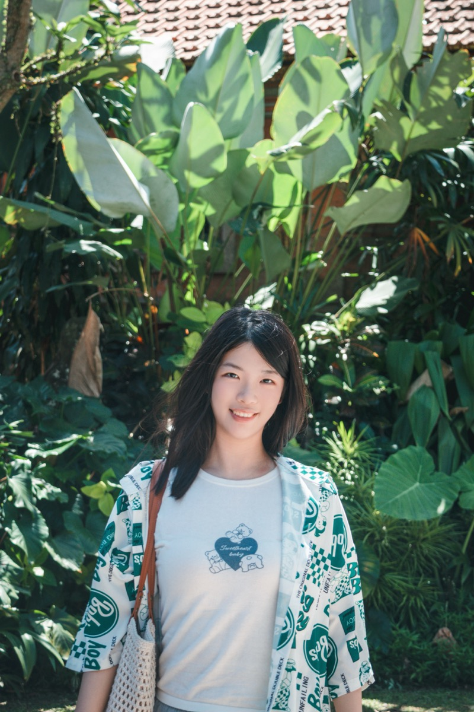
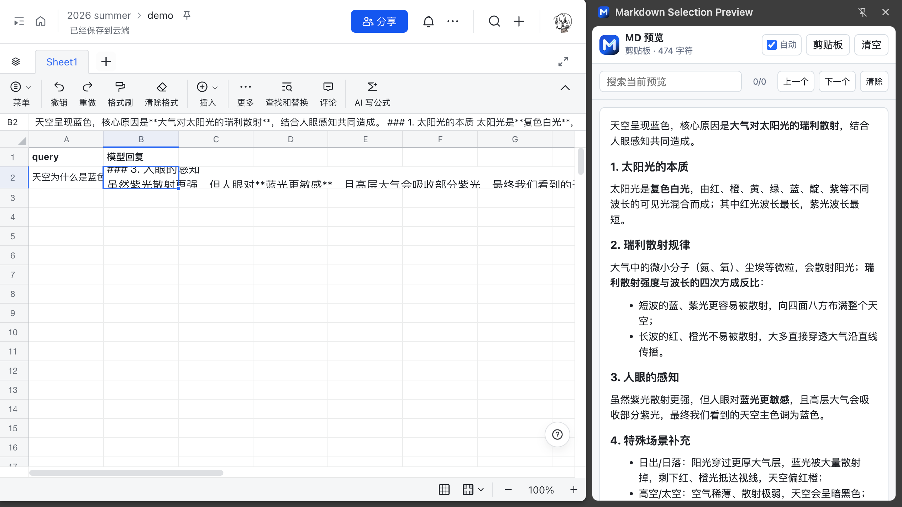
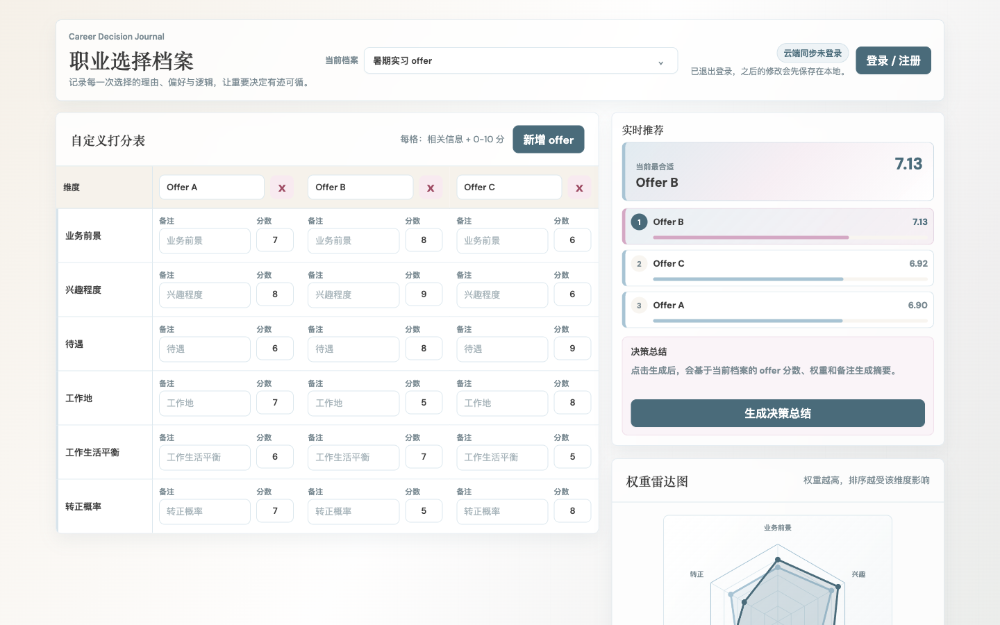
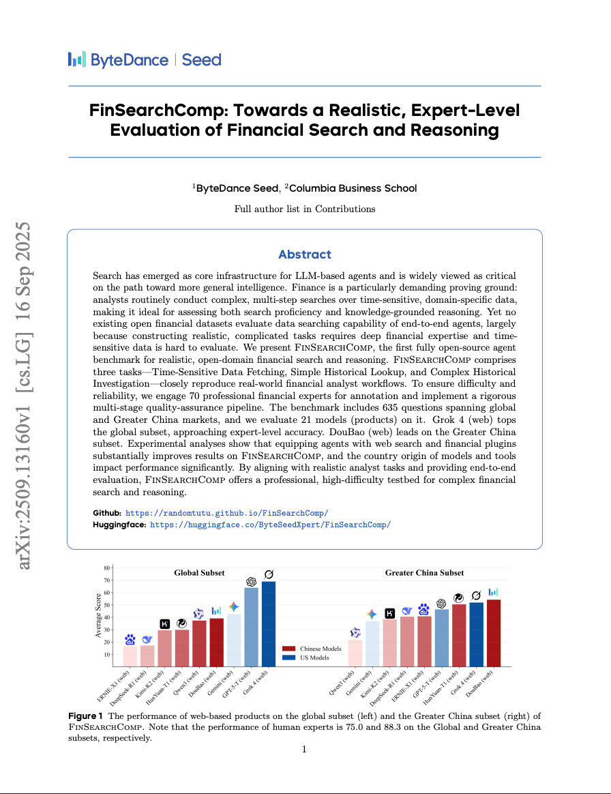
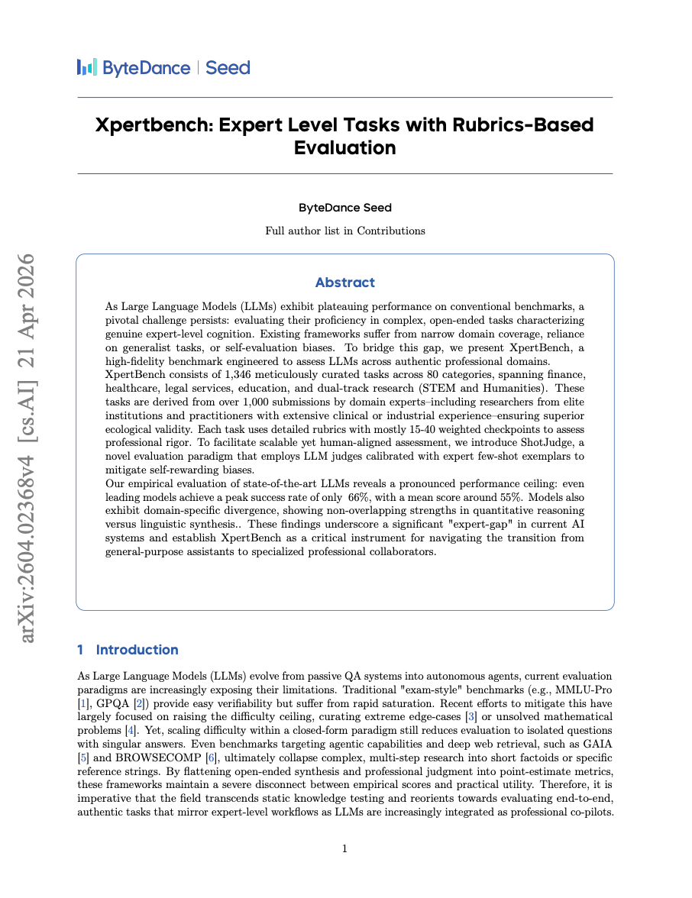

AI Product Manager · Class of 2027
Tsinghua · PKU · Harvard Exchange
用产品思维打磨 AI 体验，
在数据与直觉之间找到真实的用户价值。

清华大学经管学院金融硕士在读（2025–2027），本科毕业于北京大学经济学院，曾赴哈佛大学交换。
专注 AI 产品方向，在阿里千问、美团 Keeta、字节豆包积累了对话产品、跨境售后智能化与大模型评测等核心场景的实践经验，并参与发表 ICLR 评测集论文。
关注 AI 能力如何转化为清晰、可信且真正可用的产品体验，并持续在模型能力、用户需求与业务价值之间寻找平衡。
Skills Matrix
产品相关技能
AI 技能
语言能力
主 Chat 对话产品实习生 · 杭州
围绕回复效率开展专项优化，通过 bad case 归因定位结论后置、Markdown 结构混乱等问题，协同完成数据重刷与离线评测，使专业类问题 bad case 降低 23%，并推动线上模型版本替换。
负责资源搜索 Agent 的产品设计，梳理图片、视频与文档场景的意图分层和混排回复理想态，联动评测团队制定标准，统一多模态挂载卡组件并推动上线。
售后判责能力产品实习生 · 北京
负责巴西售后自动化退赔能力，设计本地化判责规则及 PE 与工程规则优化方案；上线两周后，CPO 由 1.37% 降至 0.87%，模型准确率由 73% 提升至 89%。
推进中东错餐识别迭代，联动多国业务调研小票样式并引入餐品照片字段策略，使骑手责任申诉率降低 5.5%，错餐判责准确率由 74% 提升至 89%。
金融项目负责人 · 北京
从 0 到 1 搭建数据标注 pipeline，制定专家作业规范与 AI 辅助质检流程，并完成首笔 rubrics 垂类数据订单的全流程交付。
策略产品实习生 · 北京
参与 ICLR 金融评测集建设，将金融任务拆分为数据检索与半开放问题两类，设计 Agent 与 PE 协同质检流程，使数据初标通过率由 45% 提升至 70%。
相关论文发表于 ICLR（arxiv.org/abs/2509.13160），并在技术社区获得广泛传播。
Selected work · 项目实践与评测集发表

为钉钉、飞书表格和普通网页提供 Chrome 右侧栏 Markdown 预览，支持直接读取表格单元格内容（不占用系统剪贴板）、剪贴板兜底、内容搜索与源文本查看，所有数据均在本地处理。

将多个 offer 的关键信息、维度打分与个人权重放在同一界面中，实时生成推荐排序和雷达图，并支持档案保存、云端同步与 AI 决策总结。

Core Contributor首个完全开源、面向真实开放域金融搜索与推理的 Agent 基准，包含 635 道题，覆盖时效数据获取、简单历史查询与复杂历史研究三类任务，并由 70 位金融专家参与标注。

Contributor面向真实专业场景的大模型评测基准，包含 80 个类别、1,346 项专家任务；每项任务主要采用 15–40 个加权检查点，并以专家少样本校准的 ShotJudge 评测，领先模型最高成功率约 66%。
欢迎聊聊 AI 产品、创业想法，或者一起讨论有意思的问题